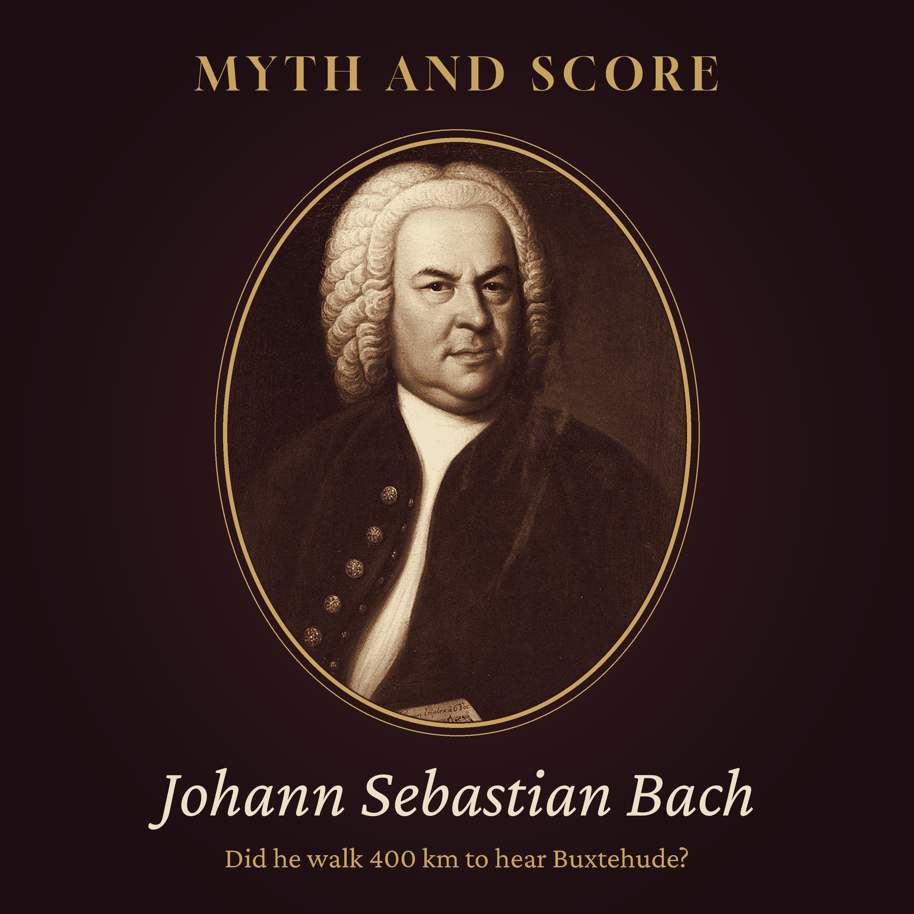

Myth and Score · Episode 6 · 40 min
Did Bach Really Walk 400 Kilometres to Hear Buxtehude?
In the autumn of 1705, a twenty-year-old church organist in Arnstadt asked for four weeks' leave, set out for Lübeck on the Baltic coast to hear the great Dieterich Buxtehude, and came home about four months later. His family later said he went on foot... about four hundred kilometres, two hundred and fifty miles. Is it true? Tonight we follow Johann Sebastian Bach from a brawl in a market square to the roads of a divided Germany, into the brick church of St Mary's and the famous Abendmusiken, past an old master's daughter whose hand came with the job (Mattheson and Handel had said no in 1703), and back to a church meeting in February 1706, whose minutes still record his strange harmonies and his long absence. Inside: the 1754 Obituary, the consistory minutes, the music he carried home. Additional sounds: Joseph Sardin, BigSoundBank.com (CC0). Chapters: The story everyone knows · A young organist in Arnstadt · A quarrel in the square · The man in Lübeck · Evening music · Four weeks · The road north · How long is four hundred kilometres? · The city of brick · Two evenings in December · The daughter · Coming home late · The minutes · Strange tones · Who said he walked? · What he carried home · The verdict · The road behind him Episode picture: Johann Sebastian Bach by Elias Gottlob Haussmann, 1748, public domain (Wikimedia Commons). Read by a synthetic voice; script written and fact-checked by the show's team.
The script
In the autumn of 1705, a young church organist asked his employers for four weeks off, set out from a small town in Thuringia for a city on the Baltic coast, and did not come home for about four months.
He was twenty years old. His name was Johann Sebastian Bach. And the story his family told afterwards is that he made the journey on foot.
Myth and Score. Episode six... Did Bach really walk four hundred kilometres to hear Buxtehude?
This episode is read by a synthetic voice. If these stories keep you company, follow the show... it helps others find it.
On this show, we take the most famous stories about great composers and hold them up to the light. Some turn out to be false. Some are half true. And some, like tonight's, turn out to rest on firmer ground than you might expect... though not quite as firm as the legend would like.
Tonight's story is a gentle one. There is no poison in it, and no murder. There is a long road, an old master, a daughter who was part of the bargain, and a church committee that wanted to know where on earth its organist had been.
To answer the question, we will go to the town of Arnstadt, where Bach had his first real post. We will take the road north, through the late autumn of 1705. We will stand in a great brick church in Lübeck, and listen, as far as we can, to what he heard there. And we will sit in on a meeting in February 1706, whose minutes still survive.
Chapter one. The story everyone knows.
Let us start with the story as it is usually told.
A young Bach, poor and hungry for music, hears of the greatest organist in the north, the old Dieterich Buxtehude, in the free city of Lübeck. He cannot afford a coach. So he simply puts on his boots and walks... more than four hundred kilometres, about two hundred and fifty miles, in the cold, to sit in a church and listen.
He is so moved by what he hears that he forgets to go home. He stays for weeks, and then for months. When at last he returns, his employers are furious. And his music is never the same again.
In some versions, there is a small comedy in the middle. The old master offers the young man his job... but only if he will marry his daughter. And the young man, like two famous musicians before him, politely declines and heads back south.
It is a lovely story. A pilgrimage, made for art alone, on foot, by a young man who would become the greatest composer of his age.
So let us see how much of it the documents will carry.
Chapter two. A young organist in Arnstadt.
Johann Sebastian Bach was born in March 1685, in Eisenach, in Thuringia, into a family that had been making music for generations. By the age of ten he had lost both his parents. He was taken in by his older brother, Johann Christoph, an organist in the town of Ohrdruf, who taught him the keyboard.
At fifteen, he went north to the town of Lüneburg, to sing in the choir of a church school. There, he came within reach of the great organists of northern Germany. Hamburg was not far away... and in Hamburg played the old master Johann Adam Reincken.
In 1703, at eighteen, Bach was asked to test and play a new organ in the New Church at Arnstadt, a small town of a few thousand people, ruled by a count. The organ had been built by Johann Friedrich Wender. The young man played it so well that within weeks the town offered him the post of organist.
It was a good post for someone so young. The duties were light... services on Sundays, a prayer meeting on a weekday, and some music with the pupils of the town's school. And the pay was generous, better than his father had earned as a town musician in Eisenach.
But Arnstadt had its difficulties. The pupils he was expected to lead were older, rougher and more numerous than he could manage. Some of them were older than Bach himself. And he was not, by temperament, a patient man.
Chapter three. A quarrel in the square.
One evening in August 1705, Bach was walking home across the market square at Arnstadt with his cousin, Barbara Catharina. Sitting on some steps was a group of pupils from the school. One of them, a young man named Johann Heinrich Geyersbach, had a stick in his hand.
Geyersbach stood up and demanded to know why Bach had insulted him. The insult, it seems, had been a remark about his playing... Bach had called him something like a nanny goat of a bassoonist. The sources do not agree on the exact word, and translations differ.
Words became blows. Geyersbach struck at him with the stick. Bach drew the small sword he was wearing. The other pupils pulled them apart before anyone was badly hurt.
The case came before the consistory, the church authority of the town, which also supervised its organist. They heard both sides. The pupil was mildly told off. And Bach was told, in so many words, that he ought to learn to live with imperfect musicians, because there would always be some.
This small affair matters for our story. It tells us that by the late summer of 1705, the young organist and his employers were already a little tired of each other. And it was only a couple of months later that he asked them for leave.
Chapter four. The man in Lübeck.
The man Bach wanted to hear was one of the most famous musicians in northern Europe.
Dieterich Buxtehude was born around 1637, probably in Helsingborg, which was then part of Denmark and is now in Sweden. His father was an organist. The son became one too, in Helsingborg and then in Helsingør, the Danish town that English speakers know as Elsinore.
In 1668, he was chosen as organist of St Mary's Church in Lübeck. It was one of the finest musical posts in the whole of northern Germany. And it came with a condition that will matter later in our story. Buxtehude married the daughter of his predecessor, Franz Tunder. This was not unusual. A post like this was a kind of family property, and marrying into it was a way of providing for the old organist's widow and children.
By 1705, Buxtehude had held the post for thirty-seven years. He was nearly seventy. He was known as a composer of brilliant organ music... toccatas, preludes and fugues that seemed to burst out of the instrument... and as the man in charge of something no other city had, the Abendmusiken.
Lübeck itself was a free imperial city, ruled by its own council of merchants, a former queen of the Hanseatic League, the old trading union of the Baltic. Its churches were built of dark red brick, and St Mary's was the proudest of them all... the church of the merchants and the town council, with towers more than a hundred metres high.
For a young organist from a small Thuringian town, it was like a journey to the capital of his art.
Chapter five. Evening music.
The word Abendmusik means simply evening music. In Lübeck it meant something quite particular.
Franz Tunder, Buxtehude's predecessor, had begun giving performances in St Mary's for the merchants of the city, around the middle of the seventeenth century. They may have started as organ recitals for men of business on their way to the stock exchange. Buxtehude turned them into something much larger.
Under him, the Abendmusiken were given in the church on Sunday afternoons, after the afternoon service, in the weeks before Christmas... usually the last two Sundays of the church year, and then three Sundays of Advent. They were not part of any service. They were concerts, of a sort, free to the public, paid for by the merchants of the city.
And they were big. Buxtehude wrote works in several parts, spread over the Sundays, for singers and instruments, with choruses and arias and sinfonias, on sacred subjects. Extra galleries were built in the church for the performers. The texts were printed, so that the audience could follow.
In 1705, there was something more. The Holy Roman Emperor, Leopold the First, had died in May. His son, Joseph the First, had succeeded him. And Buxtehude marked both events with two extraordinary evenings of music... a funeral piece for the old emperor, called Castrum doloris, the castle of mourning, and a celebration for the new one, called Templum honoris, the temple of honour.
They were performed, by most accounts, on the second and third of December, 1705. And the young man from Arnstadt was almost certainly in the city to hear them.
Chapter six. Four weeks.
So, sometime in the autumn of 1705... most writers say October... Bach went to his employers and asked for leave.
He asked for four weeks. He was given them. And he arranged for someone to play the organ in his place. The substitute was his cousin, Johann Ernst Bach, who was a few years younger than him. The family was large, and a Bach could usually be found to stand in for another.
We do not know exactly what Bach told the consistory about where he was going. Later, he would say that he had gone to Lübeck to learn one thing and another about his art. And he would say that he had asked for leave properly before he went.
Nobody, it seems, objected at the time. Four weeks is a long time for a town to go without its organist, but it was winter coming on, and the substitute was a member of the family.
What the consistory may not have understood is how far away Lübeck was. Or perhaps they did, and Bach simply stayed much longer than he had said he would.
Either way, one thing is clear from the start. Four weeks was not much time for that journey. If he walked, the road there and back would have eaten up most of it.
Chapter seven. The road north.
Arnstadt lies in the hills of Thuringia, in the middle of Germany. Lübeck lies near the Baltic coast, in the far north. Between them, in a straight line, is something over three hundred and fifty kilometres. By the roads of the time, which wound around hills, forests and marshes, and passed from one town to the next, it was more... the figure usually given is about four hundred kilometres, two hundred and fifty miles. Some estimates put it higher.
What were those roads like?
In 1705, Germany was not one country. It was a patchwork of duchies, counties, bishoprics and free cities, each with its own laws, its own coins, and often its own tolls. A traveller going north from Thuringia would cross several frontiers.
The main roads were tracks of earth and gravel, rutted by carts. In dry weather they were dusty. In autumn rain they turned to mud. Bridges were few, and ferries took travellers over the larger rivers. There were post coaches on some routes, slow and uncomfortable, and they cost money. Horses cost more. For a young man on a modest salary, the cheapest way to cover four hundred kilometres was the oldest way of all.
Walking was the ordinary way for ordinary people to travel. Journeymen craftsmen walked across Germany for years as part of their training. Students walked to their universities. A young musician walking to hear a master was doing nothing strange at all.
He would have found places to sleep in inns along the road, or perhaps with relatives or fellow musicians. He would have carried very little. And he would have been walking into the north, as the days grew shorter.
Chapter eight. How long is four hundred kilometres?
Let us put a number on it.
A healthy young man, used to walking, can cover thirty to forty kilometres in a day on a good road. On a bad road, in rain, with short autumn days, less. If Bach walked thirty-five kilometres a day, every day, the journey north would have taken him about twelve days. Allow for rest days, for bad weather, for a wrong turning or a broken shoe, and two weeks is a fair guess.
That means, if he walked both ways, about four weeks of his leave would have been spent on the road alone. He could hardly have heard more than a service or two in Lübeck before he had to turn round.
Perhaps that is part of the reason he stayed so long. Having come so far, it made little sense to leave at once.
And think of the shape of those days. Up before dawn, in the cold. Bread and perhaps a little beer at an inn. Hours on the road, through villages and fields, past church towers in the distance... each of them, for an organist, a place with an instrument inside. A town at dusk. A bed, if he was lucky, shared with strangers.
There is one more thing worth remembering. Bach had done this kind of thing before. The same family account that tells of the walk to Lübeck also says that, as a schoolboy in Lüneburg, he travelled more than once to Hamburg to hear Reincken play. That was a shorter road, about fifty kilometres each way. But it shows a habit. This was a young man who would go a long way to hear an organ played well.
Chapter nine. The city of brick.
So let us imagine him arriving, some time in November 1705, at the gates of Lübeck.
It was a large city by the standards of the time, and a rich one, though its greatest days as a trading power were behind it. It stood on an island between two rivers, with walls and gates, and a skyline of green copper spires above the red brick.
At its heart, near the market and the town hall, stood St Mary's. It was a huge Gothic church, built in the thirteenth and fourteenth centuries, and it became the model for many other brick churches around the Baltic. Inside, it was tall and pale, with great windows. And at the west end, high above the floor, stood the great organ.
There was a second, smaller organ in a chapel at the side. Buxtehude played both. On the great organ, the church's music could fill the whole enormous space.
We do not know where Bach stayed in Lübeck. We do not know whether he had lessons with Buxtehude, or simply listened to him play, or talked with him, or copied his music. There is no letter, no receipt, no note in the church's books that names him.
This is one of the strange things about the story. The most famous journey of Bach's young life left no trace at all at the place he was going to. Everything we know about it comes from the place he left, and from what his family said afterwards.
What we do know, from his own words a few months later, is that he went there to learn. And what we can be fairly sure of is that he stayed through the season of the Abendmusiken.
Chapter ten. Two evenings in December.
On the second and third of December, 1705, St Mary's was filled for the two extraordinary evenings in honour of the emperors.
The texts of both works were printed in Lübeck that year, and they survive. They tell us something of what the performances were like. The Castrum doloris, the castle of mourning, was a lament for Leopold the First. The Templum honoris, the temple of honour, was a celebration of Joseph the First, and of the peace and glory his reign was supposed to bring.
They were staged on a grand scale. Singers and players were placed around the church. There were trumpets and drums. One account suggests that the forces were among the largest the city had ever heard.
Sadly, the music itself is lost. Only the printed texts survive. We cannot listen to what Bach heard on those two evenings.
But we can imagine what it must have meant to him. In Arnstadt, he had a small organ, a few unwilling pupils and a congregation that liked its hymns plain. Here, in a great church, the oldest and most famous organist of the north was leading a whole city in music... with choirs and orchestras, organ and trumpets, on subjects of state.
It was music as a public event. It was the kind of thing a young man might dream of doing himself, one day.
Chapter eleven. The daughter.
Now, to the part of the story that sounds most like a comedy.
By 1705, Buxtehude was nearly seventy, and he was thinking about who would come after him. He had daughters. The eldest, Anna Margreta, was about thirty, and unmarried. And just as Buxtehude himself had married Franz Tunder's daughter, he hoped that his successor would marry his.
Two years earlier, in the summer of 1703, two young musicians had come up from Hamburg to look at the post. One was Johann Mattheson, a singer, composer and later a prolific writer about music. The other was his friend, a young man from Halle who was then playing in the Hamburg opera orchestra... George Frideric Handel.
Mattheson told the story many years later, in a book published in 1740. As he tells it, the two of them went to Lübeck, played on the organs of the city, and heard Buxtehude. And they learned that the post came with a wedding attached. Neither of them, Mattheson says, had the slightest wish for that part of the bargain, and they went back to Hamburg.
That is Mattheson's own account, written nearly forty years later, by a man who liked a good story and liked to put himself in it. It is the only source for the visit. But there is no reason to doubt the main point.
What about Bach? Here the documents fall silent. No source from the time says that the post was offered to Bach, or that the marriage was put to him. Many biographers think it likely that the question came up, given the timing, and given what happened to Mattheson and Handel. But it is a guess, not a record.
What we do know is this. In 1707, after Buxtehude's death, the post went to Johann Christian Schieferdecker, who had been his assistant. And in the same year, Schieferdecker married Anna Margreta.
And in October 1707, Bach married someone else... his own cousin, Maria Barbara Bach.
Chapter twelve. Coming home late.
At some point in the new year, Bach set out for home.
We do not know exactly when he left Lübeck. We do not know whether he walked the whole way back, or took a coach for part of it. By the beginning of February 1706, at the latest, he was in Arnstadt again.
If he did walk home, it was the hardest part of the whole journey. January in northern Germany is dark by the middle of the afternoon. The roads would have been frozen hard in the mornings and soft with mud by midday. Rivers could be swollen, or edged with ice. An inn at the end of a short, cold day would have been very welcome indeed.
It is worth saying that nobody wrote any of this down. There is no diary of the journey, no list of inns, no letter home from the road. Every picture we have of it... the frost, the mud, the short days... comes from what we know about travel in that century, not from Bach himself.
The family account says he stayed in Lübeck, not without profit, for almost a quarter of a year. That fits. Leaving in October, travelling for two weeks or so, staying through November, December and into January, and then the long road south again.
Four weeks of leave. About four months away.
And in Arnstadt, people had noticed.
Chapter thirteen. The minutes.
On the twenty-first of February, 1706, Bach was called before the consistory at Arnstadt.
The minutes of that meeting survive, and they are among the most quoted documents of his early life. They were written in the stiff German of a church clerk, in the third person, and they read, in places, like the report of a teacher who has finally lost patience with a gifted pupil.
The first question was where he had been for so long, and by whose leave.
Bach answered that he had been to Lübeck, to learn one thing and another about his art. And he said that he had asked for leave first.
The consistory pointed out that he had asked for four weeks. And he had stayed about four times as long.
Then came the complaints about his playing. The consistory told him that he had been making many curious variations in the chorale... the hymn tunes the congregation sang... and mixing in many strange tones, so that the congregation had been confused by them. If he wanted to use an unusual note, they said, he should hold it out properly, and not wander off at once into something else.
There were other complaints in the records of these months. His preludes before the hymns had been too long... and when the superintendent told him so, he made them much too short. And he had not been making the concerted music with the pupils that was expected of him.
Bach did not apologise. He said, in effect, that if they would give him a competent director of music, he would do his part. They gave him eight days to answer about the music with the pupils. There is no record that he ever did.
Chapter fourteen. Strange tones.
What did the congregation hear, that made them so confused?
We cannot be sure, but we have some idea. There is a small group of chorale settings by Bach, for organ, that scholars have linked with these Arnstadt years. They are short pieces, meant to accompany the singing of a hymn, or to introduce it.
In some of them, the plain hymn tune is surrounded by bold, rich harmonies, with chords that shift and slide in unexpected directions. Between the lines of the hymn, there are little flourishes on the keyboard... rapid runs, like bursts of decoration, between one phrase and the next.
For an organist, this was exciting, inventive music. For a congregation trying to sing a hymn they had known all their lives, it might well have been bewildering. Where was the next note? When should they come in? Was that chord meant to sound like that?
It is tempting to say that this was the Lübeck effect... that Bach came home full of Buxtehude's free, brilliant northern style, and tried it out on the people of Arnstadt the very next Sunday. Some writers say exactly that.
The truth is a little more careful. These settings cannot be dated precisely, and some of the complaints may describe a habit Bach already had before he left. But the timing is striking. The young man comes home from four months with the most adventurous organist in the north... and within weeks, his employers are complaining about strange tones.
Chapter fifteen. Who said he walked?
Now, to the heart of tonight's question. How do we know that Bach walked?
The answer is a single document. In 1754, four years after Bach's death, an obituary of him was published in a music journal in Leipzig, edited by Lorenz Christoph Mizler. It is known in German as the Nekrolog. It was written by two men who knew him well... his second son, Carl Philipp Emanuel Bach, and his former pupil, Johann Friedrich Agricola.
The Nekrolog is the earliest account of Bach's life, and in many ways the most important. And it tells the Lübeck story in a few lines. In Arnstadt, it says, he was seized by a strong wish to hear as many good organists as he could. So he made a journey to Lübeck... and it adds, pointedly, that he went on foot... to hear the famous organist of St Mary's, Dieterich Buxtehude. He stayed there, it says, almost a quarter of a year, not without profit, and then returned to Arnstadt.
That is all. Notice what it does and does not say. It says he went on foot. It does not say how long the walk took, or which way he went. It does not say whether he walked back. And it does not mention the trouble with the consistory at all.
The next great biographer, Johann Nikolaus Forkel, who published the first book about Bach in 1802, repeated the story, and drew on what Bach's sons had told him. From there it passed into every later life of Bach.
So the walk comes, not from a legend that grew up a century later, but from his own family, writing within a few years of his death. Carl Philipp Emanuel was not born until 1714. He was not there. He must have heard it from his father, or from the family. But it is the kind of detail that a son remembers... the story the old man told about himself as a young man.
Chapter sixteen. What he carried home.
If Bach brought anything back from Lübeck, it was not on his back. It was in his head and in his hands.
He came home with the sound of a great northern organ, played by its master. With the idea of free, fantastic organ music... toccatas that rush up and down the keyboard, fugues that break off into improvisation, pedal solos that shake the floor. Many of Bach's early organ works, scholars agree, show the influence of Buxtehude and the north German school, though it is hard to say exactly which ones were written after the journey.
There is one piece people often mention in this connection, the great Passacaglia in C minor, built over a repeating theme in the bass. Buxtehude wrote pieces of the same kind. Bach's cannot be dated precisely, and it may come from some years later. But it belongs to the same world.
He came home, too, with the idea of music as a public occasion. Two years later, in 1708, now organist at Mühlhausen, Bach wrote a cantata for the inauguration of the town council... Gott ist mein König, God is my King... for choirs, trumpets, drums, woodwind and strings. It was printed at the town's expense. It is the kind of grand civic piece Buxtehude had made at Lübeck. Some scholars see a direct line between them. It is hard to prove, but easy to hear.
And he may have brought home music on paper. Copies of Buxtehude's works circulated in the Bach family. In a manuscript collection compiled by his older brother Johann Christoph, the brother who had taught him as a boy, there are pieces by Buxtehude. We cannot be sure how they got there. A young man returning from Lübeck is one good guess.
Chapter seventeen. The verdict.
So what is left, when we hold the story up to the light?
We have a young organist with a good post and a difficult relationship with his employers. We have a request for four weeks' leave in the autumn of 1705, and an absence of about four months. We have the old master in Lübeck, the Abendmusiken, and two grand evenings in December that he almost certainly heard.
We have a document from February 1706 that records, in the dry words of a church clerk, that he had stayed about four times as long as he had been allowed, and that his hymn playing had become full of strange tones. That part of the story is not legend at all. It is in the minutes.
We have a marriage condition that was certainly part of the post, and that Mattheson and Handel certainly turned down in 1703, by Mattheson's own account. Whether it was ever put to Bach, nobody knows.
And we have the walk itself. It rests on one source... but a good one. Bach's own son, with one of his pupils, writing four years after his death. It was the ordinary way for a young man of modest means to travel, and Bach had made shorter journeys of the same kind before. There is nothing in it that is hard to believe.
So, did Bach really walk four hundred kilometres to hear Buxtehude?
Very probably, yes. The walk is plausible, and it comes from his own family's account. Nobody counted his steps. Nobody knows whether he walked every one of those kilometres, or both ways, or exactly which roads he took. The distance is an estimate. The pilgrimage is real.
And the reprimand that followed it is fully documented.
Chapter eighteen. The road behind him.
Bach did not stay long in Arnstadt after that. In 1707 he moved to Mühlhausen, and from there to Weimar, to Köthen, and finally, in 1723, to Leipzig, where he spent the last twenty-seven years of his life.
Buxtehude died in Lübeck in May 1707, a little more than a year after the young man from Thuringia had gone home. The Abendmusiken went on under his successors for another century.
Bach never became organist of St Mary's. He never married Anna Margreta. He never, as far as we know, went back to Lübeck. But in a sense he never needed to. What he had heard there went with him into every church he served.
It is worth remembering, too, how small the journey must have seemed to him, and how large it seems to us. To him, it was a young man's adventure, and a story to tell his children. To us, it is a picture of what it can take to learn something properly... to go a long way, in poor weather, to sit at the feet of a master, and to come back changed.
The consistory, of course, saw it differently. To them, he was simply late.
This has been Myth and Score. The sources for tonight's episode are in the notes.
Somewhere between Arnstadt and Lübeck, the road is still there... and so is the music he carried along it.
Also from the late hours: Embers of History · Slow Orbit · The Quiet Armoury